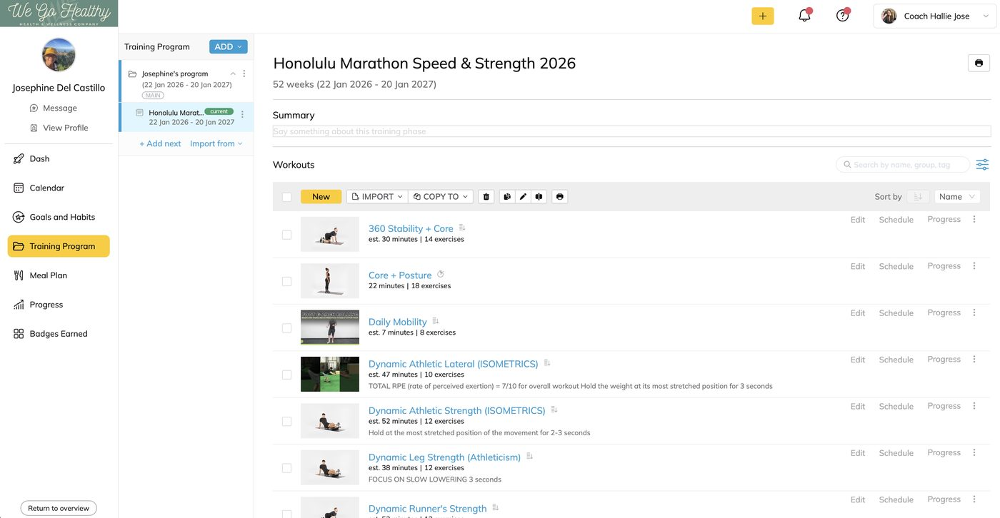
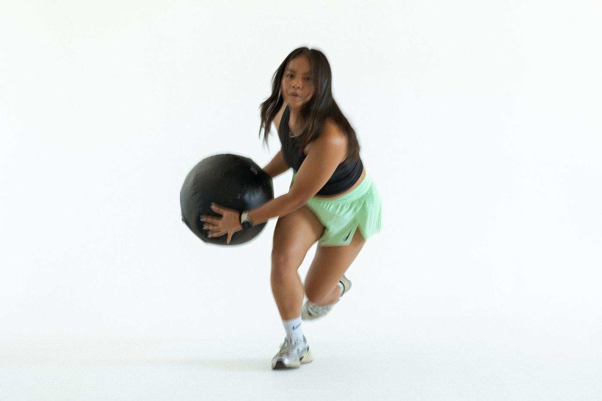
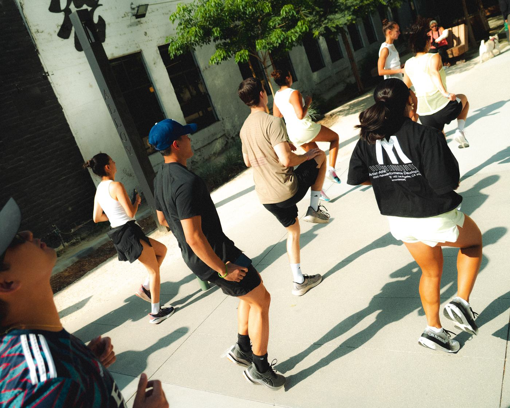
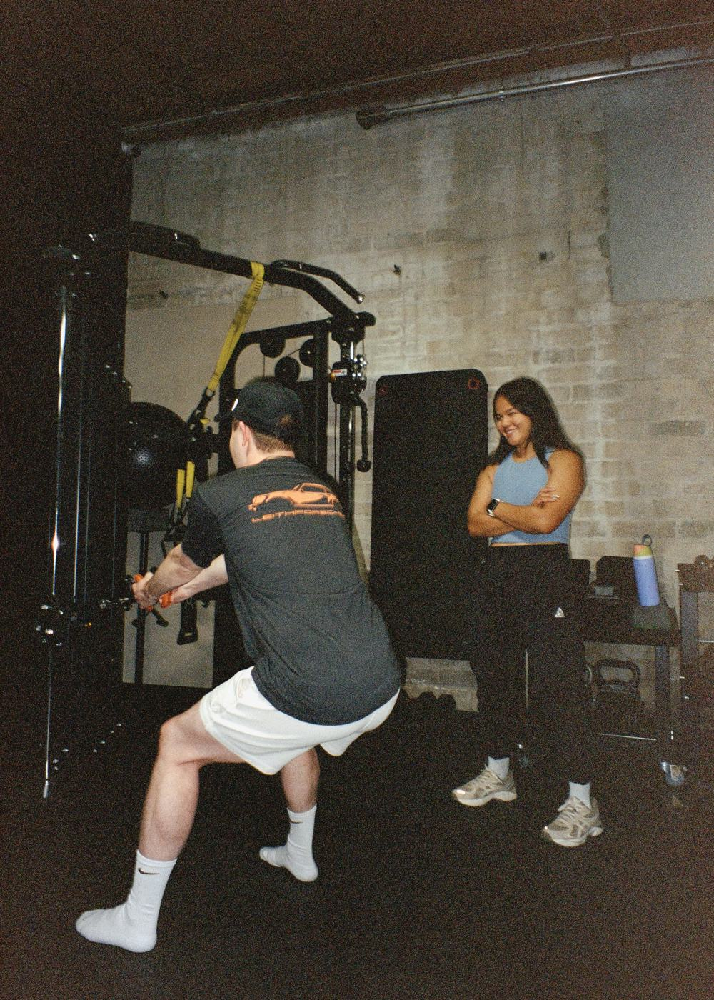
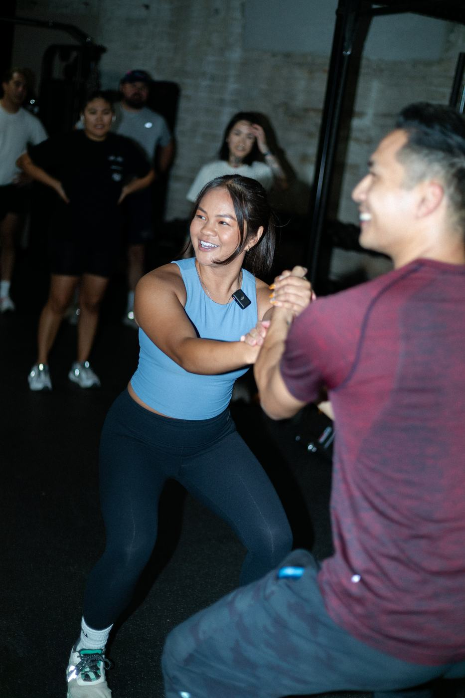

We Go Healthy is the strength and performance coaching business Hallie founded in 2020, from a single client to a fully operational online and in-person practice, built entirely on her own, with zero outside investment. Six years in, it's generated $576K in lifetime revenue, including $390K+ in the last three years alone, while holding a steady $130K+ annual run rate.
That growth came from doing every part of the business herself. She runs a consultative sales process that closes 40% of discovery calls, a genuinely high number for premium coaching, and keeps roughly half of clients long-term well beyond their first few months, the kind of retention that only comes from programming people actually feel working.
The programming itself lives on a client platform she built and maintains on Trainerize, housing the complete library of performance-based training for every client. It's informed by real clinical knowledge, built through direct collaboration with Dang Physical Therapy and Mamba Sports Academy, and expressed through a multi-phase Marathon Prep Series for the LA, Long Beach, Honolulu, and CIM marathons, alongside rehab-integrated strength and speed programming for marathoners, triathletes, dancers, combat athletes, and climbers. In 2023 she took it further into the physical world, securing coaching space at Movement Society in DTLA for kettlebell group training and hybrid run-strength sessions.

A real client's program inside the Trainerize platform Hallie built and runs herself: Honolulu Marathon Speed & Strength, 52 weeks.
On her own site, Hallie describes her mission plainly: to foster holistic empowerment by helping people take care of not just their body, but their mind and spirit too, what she calls the 360 athlete. It's a philosophy rooted in her own story. She's been a multi-sport athlete since she was five, and sports gave her something bigger than fitness: mental and spiritual confidence, and a gateway into her own self-development. When life later threw real curveballs and her own health and wellness slipped, running and strength training became her saving grace, the experience that sparked her journey into coaching so she could help others get there too.
That philosophy shows up in how she actually coaches: no generic templates, a real movement assessment, and programming built around a client's actual life, not the other way around. One client, Justin Durano, put it simply: "Hallie helped me simplify my habits and stay accountable. She taught me how good it feels to put myself first, and that my health, both physical and mental, is worth prioritizing."
Hallie's real strength shows up in how she turns a single race into a full campaign. Her Marathon Prep Series isn't one program, it's four, each built and marketed around a specific major race across the country (LA, Long Beach, Honolulu, and the California International Marathon), with its own timeline, content, and community built around race day. That's the model she's repeated again and again, from her business and performance background: pair real coaching expertise with a campaign built around a real deadline, and a community naturally forms around it.
That's the culture underneath We Go Healthy: not a generic fitness brand, but a series of real goals people train toward together, race by race, program by program, built by someone who's done the training herself.



